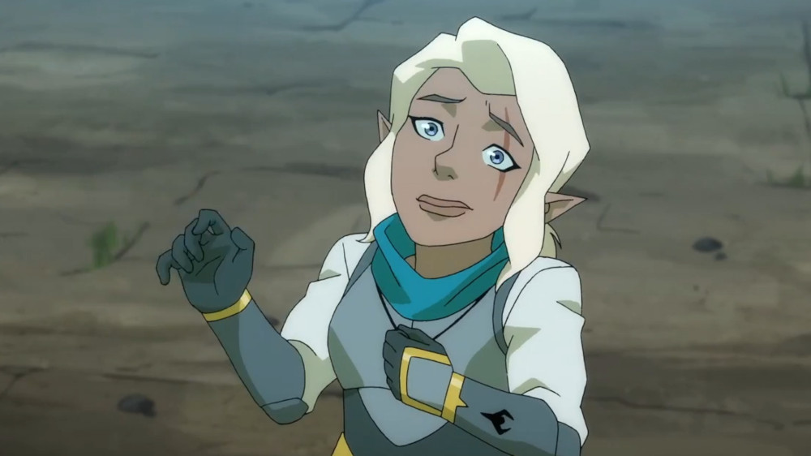
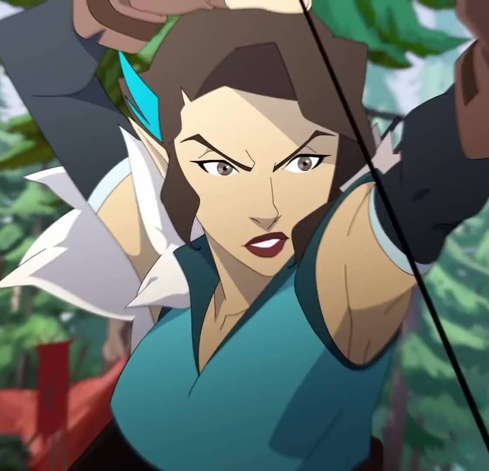
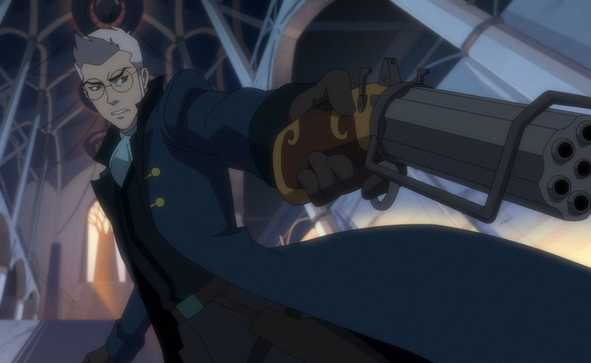
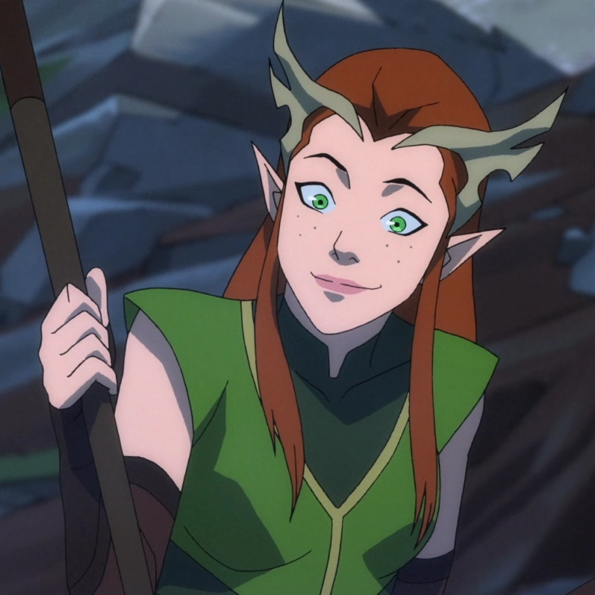
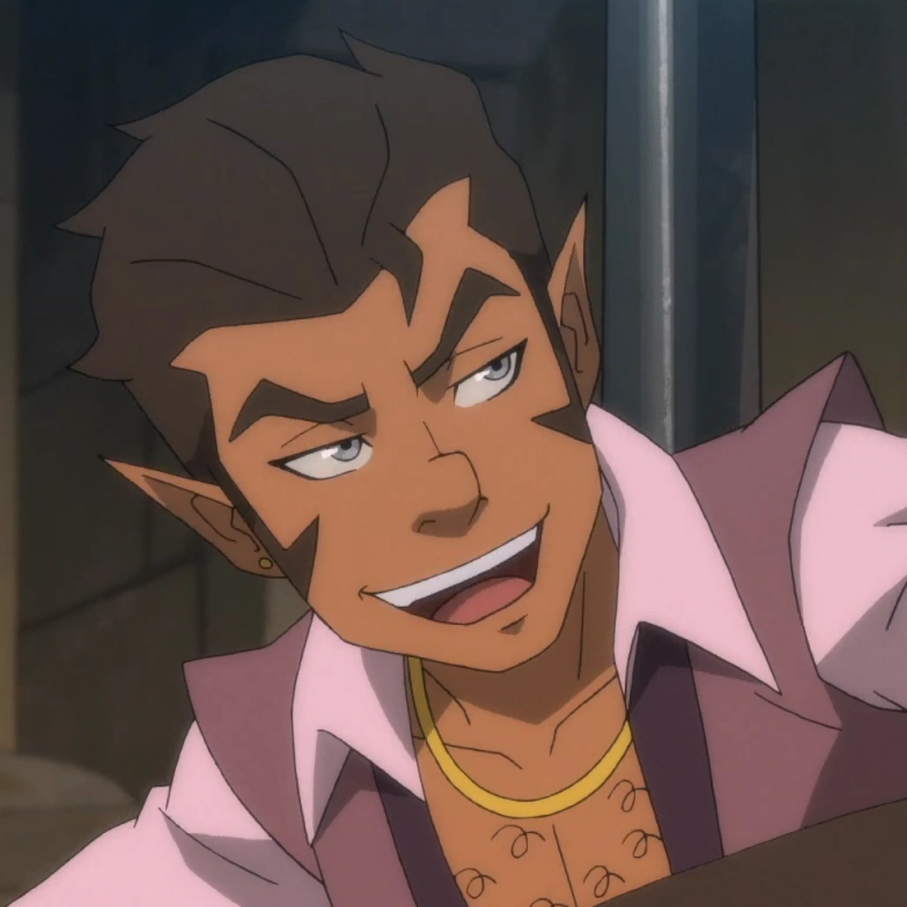
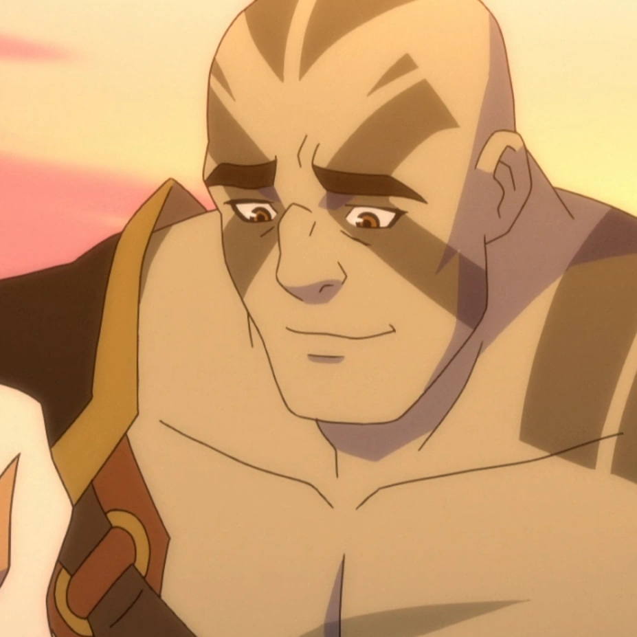

| Nombre |
Foto |
descripción |
| Pike Trickfoot |
 |
Pike Trickfoot es un clériga gnomo de Sarenrae e integrante de Vox Machina. |
| Vex'ahlia Vessar |
 |
Vex'ahlia, apodada como Vex, es una ranger/rogue semi-elfa de Vox Machina. |
| Percival de Rolo |
 |
Percival Fredrickstein von Musel Klossowski de Rolo III, a menudo conocido simplemente como Percival de Rolo o Percy, es un pistolero humano miembro de Vox Machina y el padre de las armas de fuego en el mundo de Exandria. |
| Vax'ildan Vessar |
 |
Vax'ildan, apodado como Vax, es un rogue/paladín/druida semi-elfo e integrante de Vox Machina. |
| Keyleth |
 |
Keyleth (pronunciado /ˈkiːlɪθ/) es una druida semi-elfa integrante de Vox Machina. |
| Scanlan Shorthalt |
 |
Scanlan Shorthalt es un bardo gnomo integrante del grupo Vox Machina. |
| Grog Strongjaw |
 |
Grog Strongjaw es un goliat bárbaro/guerrero e integrante de Vox Machina. |